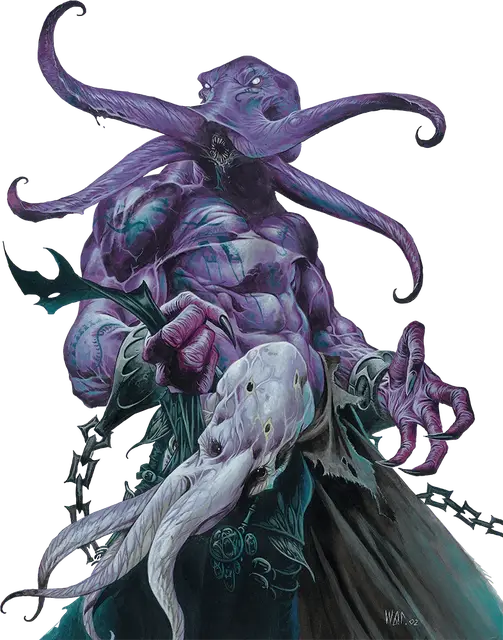

Свежеватель разума пророк
Mind Flayer Prophet
Средняя Аберрация, законно-злая

Класс Доспеха 17 (природный доспех)
Хиты 97 (15к8 + 30)
Скорость 30 футов
| мод | спас | ||
|---|---|---|---|
| СИЛ | 15 | +2 | +2 |
| ЛОВ | 14 | +2 | +2 |
| ТЕЛ | 14 | +2 | +2 |
| мод | спас | ||
|---|---|---|---|
| ИНТ | 20 | +5 | +8 |
| МДР | 17 | +3 | +6 |
| ХАР | 17 | +3 | +6 |
Навыки Восприятие +6, Магия +8, Проницательность +6, Скрытность +5
Чувства тёмное зрение 120 футов, пассивное Восприятие 16
Языки Глубинная речь, Подземный, Телепатия 120 фт.
Опасность 8 (3900 опыта)
Бонус мастерства +3
Особенности
Осведомленность. . Свежеватель разума совершает с преимуществом броски инициативы и не может быть захвачен врасплох пока дееспособен.
Сопротивление магии. Свежеватель разума совершает с преимуществом спасброски от заклинаний и прочих магических эффектов.
Действия
Щупальца. Рукопашная атака оружием: +8 к попаданию, досягаемость 5 футов, одно существо. Попадание: 15 (2к10 + 5) урона психической энергией. Если размер цели не больше Среднего, она становится схваченной (Сл высвобождения равна 15) и должна преуспеть в спасброске Интеллекта Сл 16, иначе станет ошеломленной, пока не перестанет быть схваченной.
Извлечение мозга. Рукопашная атака оружием: +8 к попаданию, досягаемость 5 футов, один гуманоид, схваченный свежевателем разума. Попадание: Цель получает 55 (10к10) колющего урона. Если этот урон уменьшает хиты цели до 0, свежеватель разума убивает цель, извлекая и пожирая её мозг.
Кнут разума (перезарядка 5-6). Свежеватель разума выплёскивает психическую энергию, нацеливаясь на двух существ, которых он может видеть в пределах 60 футов от себя. Каждая цель должна преуспеть в спасброске Интеллекта Сл 16, иначе получит 23 (4d8 + 5) психического урона и станет ошеломлённой на 1 минуту. Ошеломлённая цель может повторять спасбросок в конце каждого своего хода, прекращая эффект на себе в случае успеха.
Использование заклинаний (псионика). Свежеватель разума накладывает следующие заклинания не нуждаясь ни в каких компонентах, и его базовой характеристикой является Интеллект (Сл спасброска от заклинания 16):
• Неограниченно: левитация [levitate], обнаружение мыслей [detect thoughts], обнаружение магии [detect magic]
• 1/день каждое: подчинение чудовища [dominate monster], уход в иной мир [plane shift] (только на себя), истинное зрение [true seeing]
Описание
Некоторые свежеватели разума посвящают свою жизнь тому, чтобы постигать абстрактные истины за пределами реальности. Это понимание наделяет их сверхъестественными чувствами и позволяет сосредоточить врожденную псионическую силу.